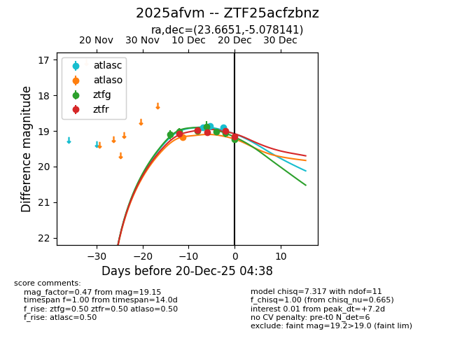
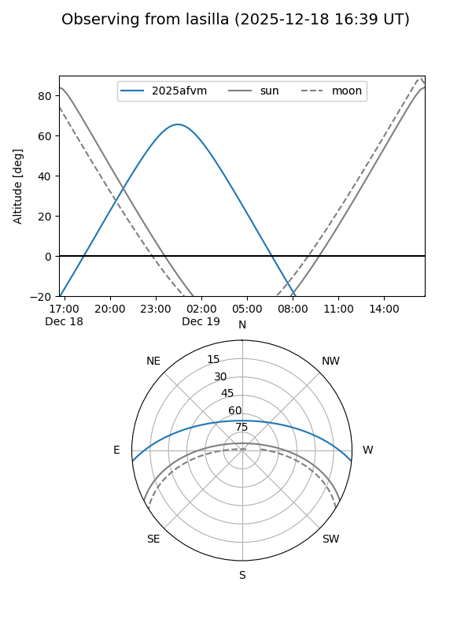
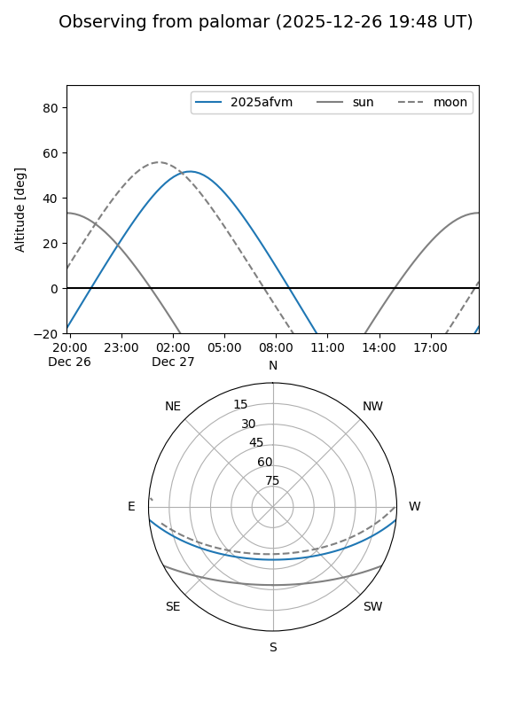
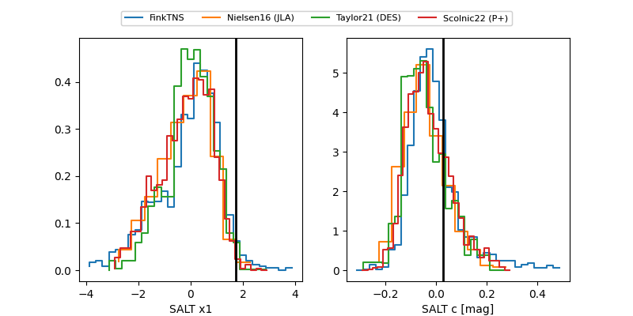

2025afvm
Target 2025afvm at 2025-12-18 11:17
Aliases and brokers:
FINK: fink-portal.org/ZTF25acfzbnz
Lasair: lasair-ztf.lsst.ac.uk/objects/ZTF25acfzbnz
ALeRCE: alerce.online/object/ZTF25acfzbnz
TNS: wis-tns.org/object/2025afvm
YSE: ziggy.ucolick.org/yse/transient_detail/2025afvm
alt names
ZTF25acfzbnz (ztf,fink_ztf)
2025afvm (tns,yse)
Coordinates:
equatorial (ra, dec) = 23.6651,-5.07814
equatorial (HMS+DMS) = 01:34:39.64,-05:04:41.31
galactic (l, b) = (149.8776,-65.66298)
Photometry
last atlaso=19.18, ztfg=19.02, ztfr=19.05
1 atlaso, 5 ztfg, 3 ztfr detections
Lightcurve

Visibility


Additional plots
